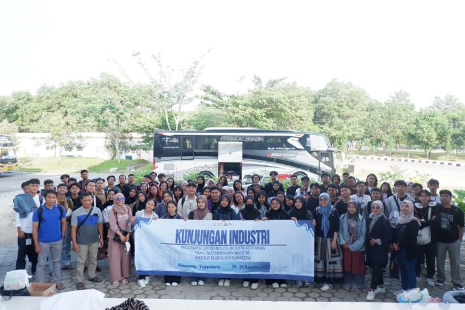

Sebagai Media Pembelajaran di Luar Kampus, Mahasiswa Prodi Teknologi Industri Pertanian ITERA Gelar Kunjungan Industri
Sebanyak 76 mahasiswa Angkatan 2023 dan 6 dosen Program Studi Teknologi Industri Pertanian (TIP), Fakultas Teknologi Industri, Institut Teknologi Sumatera menggelar kunjungan industri di 3 perusahaan yaitu PT Jamu dan Farmasi Sido Muncul Tbk di Semarang, PT Madubaru PG-PS Madukismo, Coklat Ndalem di Yogyakarta yang dilaksanakan pada tanggal 24 Agustus 2025 sampai 28 Agustus 2025. :contentReference[oaicite:1]{index=1}
Melalui rangkaian kunjungan ini, mahasiswa TIP Itera diharapkan dapat menghubungkan ilmu yang diperoleh di kelas dengan praktik nyata di lapangan, serta termotivasi untuk mengembangkan diri menghadapi dunia industri dan akademik ke depan. :contentReference[oaicite:2]{index=2}
Kegiatan ini dimulai dengan keberangkatan pada pagi hari tepatnya pada tanggal 24 Agustus 2025. Pada tanggal 25 Agustus 2025, mahasiswa mengunjungi PT Jamu dan Farmasi Sido Muncul yang berlokasi di Jalan Raya Semarang Solo Km.28 Krajan Diwak, Krajan, Klepu, Kec. Bergas, Kabupaten Semarang, Jawa Tengah. Mahasiswa mendapat pengarahan mengenai SOP yang ada di dalam industri tersebut lalu melakukan dokumentasi dan pengarahan jalur masuk kedalam industri. :contentReference[oaicite:3]{index=3}
Di PT Jamu dan Farmasi Sido Muncul Tbk mahasiswa diberikan penjelasan sejarah Sido Muncul terbentuk dan menjelaskan proses awal mula bahan baku sampai kedalam industri hingga menjadi produk. Selain itu, Mahasiswa juga diarahkan ke Agrowisata Sido Muncul untuk melihat hewan-hewan yang ada didalam. Selanjutnya mahasiswa juga diarahkan kedalam satu gedung untuk melakukan sesi diskusi terhadap pihak Sido Muncul. Mahasiswa juga mendapatkan beberapa produk yang dihasilkan oleh Sido Muncul tersebut. :contentReference[oaicite:4]{index=4}
Setelah itu, mahasiswa mengunjungi PT Madubaru PG-PS Madukismo yang berlokasi Desa Padokan Tirtonirmolo, Kecamatan Kasihan, Rogocolo, Tirtonirmolo, Bantul, Daerah Istimewa Yogyakarta. Kegiatan diawali dengan pengenalan sejarah PT Madubaru, proses terbentuknya gula dan handsanitizer. Selanjutnya mahasiswa mobilisasi ke dalam industri menggunakan salah satu fasilitas yaitu kereta uap. :contentReference[oaicite:5]{index=5}
Dalam kunjungan ini mahasiswa memperoleh wawasan langsung mengenai manajemen produksi, pengendalian kualitas, serta praktik nyata lain dari proses industri yang teorinya mereka pelajari di kampus. :contentReference[oaicite:6]{index=6}